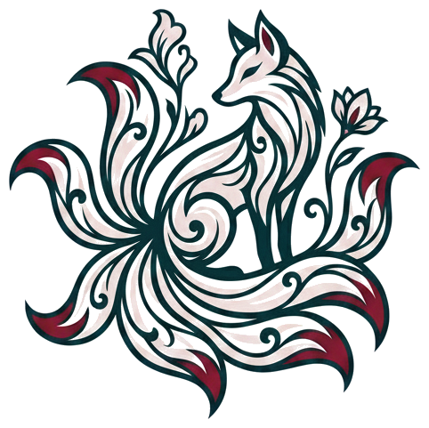

Brand gradients — full-strength references + the v2 token washes used on banners and headers
Navy Deep
135deg, #005D97 → #003d66
Navy → Pink
to right, #005D97 → #FBE7F1
Navy → Berry
135deg, #005D97 → #B8447A
Pink → Ice (light sections)
135deg, #FBE7F1 → #e6f2f8
Navy → Teal
135deg, #005D97 → #0F8B8D
Page Header Token (wash)
navy→teal→pink at ~10%
PAGE HEADER BAR — Top of every page
Uses the canonical page-header-bar token — light navy→teal wash at 135deg with a pink ballerina slash and berry corner whisper. Dark text. Full viewport width. See "Banner Tokens" section for the gradient definition.
My Work
Calendar View
Projects
MY WORK SECTION BANNERS — How they stack on the live page
All four banners use the canonical section-header token — navy→teal meld at 160deg with pink candlelight from below, dark text. See the "Banner Tokens" section for the full gradient spec.
Mentions + Updates
3Clear all
Heads-up feed — @mentions, project adds, new tasks/subtasks. Click an alert to navigate; no inline actions.
My Tasks
12
Sortable by title · type · status · due date · priority. Status (board column) drives completion.
My Subtasks
4
Incomplete subtasks assigned to you across every task in the workspace.
Personal Tasks
8+ Add Task
Private scratchpad — categorized by Meetings, Admin, Strategy, Creative, etc.
Banner spec — uses canonical section-header token
Gradient: see "Banner Tokens" section for full spec
Optional icon: 14x14 lucide-style, #002339 at 80% opacity — Bell for Mentions + Updates, ListChecks for My Subtasks, Briefcase for Personal Tasks, no icon for My Tasks
Count chip: bg rgba(0,35,57,.12) · text #002339
Right-side action button (Clear all, + Add Task, etc.): brand-navy primary — bg #005D97 · text white
Stack order top→bottom: Mentions + Updates → My Tasks → My Subtasks → Personal Tasks
Section gap: 16px between banners
Dropdown Menu Style
Signature navy gradient wash · 1px navy-19% border · 12px radius · rounded-lg option rows with light-blue selected state
8px wide, navy #005D97 thumb, 2px white inset border creates floating pill effect. Transparent track.
8px, no track, navy #005D97 thumb with white inset border
Q3 blog post
Draft · Due Jun 4
Social series
In review · Due Jun 8
Newsletter
Scheduled · Due Jun 12
Case study
Backlog · No date
Landing page
In progress · Due Jun 20
Ad creative
Draft · Due Jun 15
Email campaign
Approved · Due Jul 1
Border Hierarchy
Thickest at the page level, titrating down for nested elements. All borders use #002339 (navy).
Level 1 — Page Cards
1.5px · Main content cards, project cards, section frames
Q3 Marketing Campaign
5 items · 62% complete · Due Jul 15
Blog post draft
In progress · Due Jun 4
Social assets
In review · Due Jun 8
Level 2 — Nested Items
1px · Content items inside cards, list rows, board cards
Update pricing page copy
In progress · Due Jun 20
Write first draft
Design review
Final approval
Level 3 — Micro Elements
1px · Subtasks, checkboxes, input fields, dividers use slate tones
May 28, 2026
ApprovedPublishedScheduled
1.5px · #002339
Page cards, sections, modals, slide-overs
1px · #002339 @ 19%
Content items, board cards, list rows, nested cards
1px · #cbd5e1 (slate-300)
Inputs, checkboxes, badges, dividers, subtasks
Shadow Tokens
Navy-tinted 5-tier elevation scale (xs / sm / md / lg / xl). Two-layer for sm and md (close edge + far lift). Single-layer with negative spread for lg and xl (focused, contained — for modals and drag overlays).
Side-by-side · five elevations
XS
SM
MD
LG
XL
shadow-xs
XS · subtle lift
0 1px 2px rgba(0,35,57,.09)
Filter chips · hover lift on list rows · tag chips · small status pills
Existing 47 shadow uses (shadow-sm/md/lg/xl) adopt the new values automatically on next build — no code migration needed. The override approach matches the pattern Linear, Vercel, Stripe, and Shopify Polaris use.
Form Fields
Three label styles · three sizes · six states · two variants. Hint text always sits under the field.
Labels — three styles
DEFAULT LABEL
12px · 700 · #64748b · uppercase · tracking .05em
COMPACT LABEL
10px · used in slide-over key fields
Inline Label
12px · 600 · slate-700 · sentence case · for inline form rows
Sizes — sm / md (default) / lg
SM · 32px tall
MD · 40px tall · default
LG · 48px tall · emphasis
States — MD size shown
Default
Hover
Focus
Error
Title is required
Disabled
With hint
Visible to anyone in the workspace.
Variants
Leading icon
Textarea
Spec
Border:slate-300 / #cbd5e1 at rest · slate-400 on hover · #005D97 (brand-600) on focus + 3px ring at #005D9725
Error state: border + 3px ring at #BA2C2C (delete red) · inline error message below with matching red icon + text
Disabled: fill #F7F9FC · border slate-200 · text slate-400 · cursor: not-allowed
Hint text: always sits under the input · 11px · slate-500 · 4px margin-top
Radius: 6px (sm) · 8px (md, lg)
Three sizes: SM (32px tall, 12px text) for compact contexts · MD (40px, 13px) as default · LG (48px, 14px) for auth and emphasis
MD avatars with 2px white border · 8px negative offset · overflow shown as slate +N chip · max 3 + overflow chip (4 shown when exactly 4 members)
Spec
Initials background:linear-gradient(135deg, #005D97, #D4729E) — the brand navy → rose gradient. Same for every user (no hue rotation).
Initials: first letter of first name + first letter of last name. Single name → just first letter. XS/SM show one letter max; MD+ show two.
Initials font size: XS 7px · SM 9px · MD 10px · LG 13px · XL 16px (all 700 weight, white)
User-icon fallback: slate-200 background · lucide User icon at slate-400 · sized to fit (~50% of avatar diameter)
Stacked overlay: 2px white border on each avatar · -8px margin-left between adjacent avatars · max 3 shown + overflow chip (slate-300 bg, slate-600 text, format "+N")
Note: No "online" indicator dot. Presence is handled task-scoped via the Task Presence Indicator (Batch 4), not globally on avatars.
Typography Scale
Heading scale bumped 2026-06-02. Body/chip/badge text unchanged. Section heading consolidated to 24px.
Page Title Faune Display Black (900) / 32px
Section Heading Faune Text Bold (700) / 24px
Card Title / Subsection Faune Text Bold (700) / 17px
Body Text / UI Labels Violet Sans / 14px / semibold
This is a sample paragraph set in Violet Sans at 13px — the default for descriptions, metadata, and longer-form text throughout the app. It pairs with Faune headings to create contrast between editorial display type and clean geometric body copy.
FIELD LABEL Violet Sans / 12px / uppercase / slate-500
Sign-in, sign-up, and password-reset pages. Same card anatomy serves all three modes; mode toggle handles sign-in/sign-up. First impression for new users — composed from foundational tokens (Form Fields LG, Shadow Tokens lg, brand colors).

kitsune logo public/assets/ kitsune-logo- transparent.png
Logo: kitsune PNG (public/assets/kitsune-logo-transparent.png) · 144×144 · centered above title · no container (no gradient tile, no rounded square) — logo carries its own composition
Title: Faune Display Black · 26px · letter-spacing: -0.01em · color #002339
Tagline: 13px · slate-500 · sits directly below the wordmark
Mode toggle: 2-button pill on #F4F8FB bg · active button gets white bg + shadow-xs + #002339 text · inactive slate-500
Form fields: use the LG size from Form Fields (48px tall, 14px text) · uppercase block labels · standard focus ring
SSO buttons: white bg · slate-300 border · provider logo + label · same height as primary
Footer link: 12px slate-500 with brand-600 anchor · centered
Workspace creation flow: this card does NOT include "create your workspace" in the sign-up path. New users land in whatever workspace they've been invited to. Adding a new workspace lives in Settings → Workspaces (see Settings Tabs spec). The data model supports multi-workspace per user today; a future onboarding template can promote the existing /create-workspace page into a guided first-run flow without schema changes.
Build gaps (not design): live LoginPage.tsx today is missing a "Forgot password" link and only supports Google OAuth. The card anatomy above supports both — adding them is a build item, not a design item. Same anatomy serves a dedicated password-reset page (drop the password field, drop the SSO block, swap the primary button label to "Send reset link").
Sidebar / Navigation
Navy gradient rail with kitsune logo, nav links, and project list
ContentedCal
Content Studio
My Work
Projects
Calendar
Settings
Projects
Q3 Campaign
Blog Series
Product Launch
T
Taylor
Slide-Over / Modal
Detail panel that opens from the right. Navy-framed with soft interior.
Content Details
✕
Title
Status
Research
Due Date
Jun 4, 2026
Source
Ordinal
Description
Draft the announcement post for the Q3 product launch...
Cancel
Save Changes
MODAL — Confirmation
Delete this item?
This will permanently remove "Q3 launch announcement" and all its subtasks. This action cannot be undone.
Cancel
Delete
Confirmation Modal Pattern
Transient "are you sure?" modal for destructive, irreversible, or otherwise weighty actions. Distinct from the persistent Slide-Over (Section 2) — this pattern appears, blocks the page, gets a decision, and dismisses. The red-tinted shadow is a deliberate "pause and confirm" cue, present on every variant regardless of action color.
Destructive variant (delete / remove)
Delete "Q3 Campaign"?
This will permanently remove the project and all 12 items inside it. Subtasks, comments, and linked assets will be deleted. This action cannot be undone.
Warning variant (non-destructive but irreversible)
Move 8 items to "Completed"?
Items will be marked done and removed from active views. You can find them in archived items if needed.
Shadow (both variants): two-layer — close red halo 0 2px 4px rgba(186,44,44,.25) stacked over the standard drop shadow 0 20px 40px -8px rgba(0,35,57,.22). Red shadow appears on every variant — it signals "this is a decision moment," not "this specific button color."
Body: padding 22px · icon circle (40×40 rounded-full) + title/copy in two-column flex
Icon circle: bg state color at 15% (destructive) or 30% (warning) · icon stroke in state's text color
Title: Faune Text Bold · 15px · #002339 · usually phrased as a question
Action bar: bg #F7F9FC · top border 1px #00233918 · padding 14px 22px · right-aligned · 8px gap
Cancel button: white bg · slate-300 border · slate-600 text · 13px / 600 / 8px padding
Confirm button: state color bg (destructive #BA2C2C · warning #A05042) · white text · no border · label uses verb + object ("Delete project", "Move items") — never generic "OK" or "Confirm"
Future variants: the same anatomy supports an info variant (navy icon circle, navy confirm button) for non-destructive "are you sure?" confirms like "Move to a different workspace?" — the red shadow stays in place so the modal still reads as a deliberate decision moment.
Status Badges / Pills
Inline status indicators using board column colors. Pill and dot variants.
Shape-shaped placeholders shown while content is being fetched. Replaces the spinner-only loading pattern. Wavy gradient wash combines a soft brand-navy tint with a pink-300 shimmer peak so loading still feels like ContentedCal — not generic grey.
List view row
Board card
Slide-over panel
Spec
Base wash: soft blue tint — #DDE9F2 for most elements · #C5D8E8 (cc-skel-strong) for primary content lines (titles, labels)
Shimmer peak: pink 300 #FBE7F1 at the 50% gradient stop, sweeping across each shape
Animation: background-position sweep from 220% to -120% · 2.4s · linear · infinite · one shared @keyframes cc-skel-wave drives every skeleton on the page in sync
Gradient:100deg linear-gradient · 5 stops (base · base · pink · base · base) with the pink band ~24% wide · background-size: 220% 100%
Radius: 4px for text-like rectangles · 8px for inputs/textareas · 50% for circles (avatars) · 99px for pills (status chips)
Heights: 8-10px small text · 12-13px body · 18px titles · 32px input fields · 80px textareas
Container stays real: the surrounding card (border, padding, shadow) renders normally — only the inner content is skeletonized. When data loads, no layout shift, just content snaps from skeleton → real.
Replaces: the existing spinner-only pattern (e.g., brand-500 Loader2 at flex items-center justify-center h-[60vh])
Reduced motion fallback: users with prefers-reduced-motion: reduce see flat #DDE9F2 blocks (no animation, no pink shimmer). Hierarchy + layout still communicate "loading" via skeleton shape alone.
Empty State Variants
What blank sections look like before content exists. One pattern, three intensity levels. Icon color matches the state; the "all caught up" success state gets a slightly warmer treatment as a reserved moment of delight.
Contextual empty (inside a card / section)
You're all caught up!
Nothing new since your last visit. Enjoy the calm.
No projects yet
Create your first project to start organizing content.
Research
No items here yet
Drag items here or click + to add
Other variants — level 2 + level 3
No matching items
Try a different search or clear filters.
No comments yet. Be the first.
No subtasks. Break this down into smaller pieces.
Spec — three intensity levels
Level 1 — Page-level / first-time: 1.5px navy border card · 32px vertical padding · 40×40 icon circle (state-color bg at 12-15% · icon at text color) · Faune-bold 14px title · slate-400 body · primary CTA button if there's an action
Level 2 — Section / panel empty: 1px navy-30 border · 22-28px padding · 36px icon circle OR plain centered icon · 13px / 600 title · 11px slate-400 body · usually no CTA
Level 3 — Inline / inside a small block: no border (uses parent container) · 16-22px padding · plain centered icon (no circle, slate-300 stroke) · 12px slate-400 single-line message · never has a CTA
Icon color logic: match the state — green for "all caught up" / success · navy for "create something" / informational · slate for "no results" / neutral · coral for "nothing here yet" / waiting
"Happy" success state (e.g., All caught up): upgrade to a 48×48 rounded-2xl icon container with a green→pink gradient fill (linear-gradient(135deg, #92D1B228 0%, #FBE7F140 100%)) and a sun icon instead of a generic check. Title gets an exclamation; body adds a contented sign-off. Reserved for success states only — keeping it scarce is what makes it land.
Tone: reassuring, not alarming. Use "yet" liberally ("No projects yet", "No subtasks yet") to imply this is a normal state, not an error.
CTA when present: short verb-first label · brand-600 primary button · 7-8px padding · 12px font-size
The "yet" rule: "No projects." reads as final and error-feeling. "No projects yet." reads as transient and invitation-feeling. Three letters carry a lot of UX weight — use them.
Calendar Page View
Full month calendar with content items shown as colored blocks
‹June 2026›
MonthWeek
Sun
Mon
Tue
Wed
Thu
Fri
Sat
1
2
3
4
Blog post draft
5
6
7
8
Social assets
9
10
11
12
Newsletter
Case study
13
☐ Write outline
☑ Research notes
Subtask pills: 0.5px tinted border (slate-300 for active, green-300 for completed) over a light fill — distinct from event pills, slimmer outline so the cell hierarchy reads as Project marker → Event pill → Subtask pill.
Checkbox & Toggle
Subtask checkboxes and toggle switches using the system palette
CHECKBOXES
Unchecked — default
Hover state
Checked — navy fill
Completed subtask
TOGGLES
Off
On
SPEC
Checkbox: 18px · 4px radius
Border off: 1.5px #cbd5e1
Border hover: 1.5px #005D97
Fill checked: #005D97
Toggle track: 36×20px · 10px radius
Toggle off: #cbd5e1
Toggle on: #005D97
Filter Bar
Stronger signature navy gradient wash · 1px navy-19% border · 12px radius · search + chip filters + clear · three chip states (zero / one with color / multi)
Showing 24 of 47 items (filtered)
Chip — Zero active
White bg · slate-600 text · 1px #00233925 border
Hover: bg #005D9710
Label: "All {Plural}"
Chip — One active w/ color
Tinted bg {color}15 · text {color} · border full color
Includes a 2px color dot left of the label
Label: the selected option's name
Results count: mt-2 · text-xs · slate-500 · "(filtered)" pill in brand-600 when active
Settings Tabs
Horizontal tab bar used on the Settings page and any other multi-section configuration surface. Default / hover / active / attention-badge variants. Attention badge appears only when a tab has items needing user action — reserved use keeps the Settings area feeling clean.
Four states
Default
text-slate-600 · font-600 · no underline
Hover
text-slate-700 · bg #005D9708 wash
Active
text-brand-600 · 2px navy underline
With badge5
numeric pill · brand-600 fill · attention only
Spec
Container: horizontal flex · gap 4px · bottom-aligned · border-bottom: 1px solid #00233918 on the row (the "rail")
Tab:px-4 py-2.5 · text-sm · font-semibold · 14px lucide icon · margin-bottom -1px so the 2px active underline overlaps the rail
Default:text-slate-600 · transparent underline
Hover:text-slate-700 · bg-[#005D9708] wash · still no underline
Active:text-brand-600 (#005D97) · 2px solid navy underline · icon picks up brand color via stroke="currentColor"
Attention badge: numeric pill on the right of the label, rendered only when count > 0. Pill stays the same in every tab state (default · hover · active) so the eye learns "blue dot = something to look at" independent of which tab is selected.
Badge geometry:min-width 18px · height 18px · px-1.5 · rounded-full
Badge typography:text-[10px] · font-bold · leading-none · white text · brand navy (#005D97) fill
Badge content: integer count · cap display at 99+ for any value over 99 · no text labels (number only, tab label supplies the noun)
Transition: color + bg both 150ms · underline doesn't slide (instant swap reads sharper) · badge appears/disappears instantly
Where it's used: Settings page (Team · Content Types · Custom Fields · Integrations · API Keys · etc.) and IntakeQueue (Forms · Slack tabs — see Batch 4 Slack UI cluster). Each consuming page is responsible for telling the tab bar its own count (Team counts pending invites; API Keys could count expiring keys; Intake counts triage items).
Bulk Action Toolbar
Floating bottom toolbar that appears when one or more list/board items are selected. Same component, same behavior on the main List view and the Project detail List tab. Slides up from below on first selection; fades out when selection clears.
Card: white · 1.5px #002339 border · rounded-2xl (14px) · canonical shadow-lg · padding 8px 8px 8px 16px (extra left for the count chip)
Selection count: brand-navy pill (same geometry as the Settings Tabs attention badge — 20px min-width, 11px bold white text) followed by the word "selected" in 13px / 600 / navy
Dividers: 1px × 22px tall #00233918 · one after selection count, one before clear
Action buttons: transparent bg · 7px 11px padding · 12px / 600 / slate-700 · 13px lucide icon · 5px gap between icon and label · hover gets bg-[#005D9708] wash
Delete button: same anatomy as other action buttons but text + icon in delete red (#BA2C2C). Triggers the canonical Confirmation Modal Pattern (destructive variant) before any items are actually deleted.
Clear button: slate-500 text · no icon · same padding as other actions · always rightmost in the bar
Selected row styling: selected list rows get a brand-navy wash (bg-[#005D9710]) — same intensity as the hover state on Settings Tabs but applied to a full row
Entry animation: slide up from below + fade in over 180ms ease-out when selection first goes from 0 → 1. Exit: fade only (no slide back down — feels jumpy if you're rapidly toggling selection).
Maximum visible actions: 5. When more accumulate (export, copy as template, move to project, duplicate, etc.), collapse into a "..." overflow icon button to the right of the action group, just before the divider/Clear button. Overflow menu opens upward (toolbar is bottom-anchored) using the canonical Dropdown Menu Style.
Narrow viewport behavior (< 640px wide): action buttons collapse to icon-only with their labels exposed via tooltip on hover (desktop) or long-press (touch). The selection count chip and "Clear" button keep their text — those carry identity, not just action affordance. Card width shrinks to fit; padding drops to 8px on all sides. Matches the bulk-bar pattern in Linear / Asana / Notion.
Where it's used: List view (main route) and Project detail → List tab. Same component, same behavior in both surfaces. Appears even when only 1 item is selected — the bulk toolbar is the canonical way to do single-row bulk operations too, keeping the affordance consistent.
Delete button rule: the only place this toolbar departs from "all actions are slate-700" is the Delete button — destructive actions earn the visual exception. Pattern matches the Confirmation Modal destructive variant: red text + red icon + triggers the red-haloed confirmation modal before anything actually gets deleted.
Activity Log Row
Timeline-style row used in two contexts: item activity (inside the detail slide-over) and project activity (on the project detail page). Same anatomy in both. Each row is icon disk + sentence + relative time, with a vertical connector running through the disks to give the timeline its rhythm.
Activity
TTaylor moved status from Draft to In Progress
2 minutes ago
JJess assigned this to SSam
14 minutes ago
SSam commented: "Ready for legal review — pinging the team."
1 hour ago
TTaylor added subtask "Schedule social media posts"
3 hours ago
JJess moved this to project "Q3 Launch Campaign"
Yesterday at 4:18 PM
TTaylor created this item
Jun 10, 2026
Spec
Row: 8px 0 padding · flex with gap 10px · icon disk + sentence + relative time
Icon disk: 22px circle · state-color bg at 12-30% · 11px lucide icon in state's text color · positioned 1px from left edge so the vertical connector line passes behind it
Vertical connector: 1px #00233910 · runs through the center of the icon disks · top/bottom 14px inset from the header / last row · gives the timeline its rhythm
Actor block: inline-flex with 4px gap · 18px avatar + 13px / 600 navy name. Used everywhere a person appears in a sentence. The 18px avatar is a purpose-built inline-text size (between Avatar Sizes XS 16 and SM 24 from the canonical Avatar Sizes spec) — flagged for potential promotion to canonical if it lands in 3+ surfaces.
Object styling by activity type:
Status changes: show before/after pills using canonical Status Badges
Comments: quoted in italic slate-700 ("Ready for legal review…")
Subtask / item names: quoted in plain medium-weight slate-700 ("Schedule social media posts")
File uploads: file name in monospace
People (in subject and object position): the actor block pattern, same anatomy
Relative time: 11px slate-400 · 2px top margin from the sentence · format ladder:
"just now" (under 1 min)
"{N} minutes ago" (under 1 hr)
"{N} hours ago" (under 24 hr)
"Yesterday at {time}" (1 day)
"{Mon DD}" (current year)
"{Mon DD, YYYY}" (older). Localized to the user's timezone.
Activity-type → icon-color logic:
Status changes: green (#92D1B220 bg, #357254 icon)
Created (the first activity in any item's life): uses the "happy state" green→pink gradient disk (linear-gradient(135deg, #92D1B228 0%, #FBE7F140 100%)) — borrows the brand moment from the "all caught up" empty state to mark the item's birth. Subtle, doesn't dominate.
Where it's used: item-level activity inside the detail slide-over (Activity section) and project-level activity on the project detail page. Same row anatomy in both; project-level rows can add the project context to the sentence (e.g., "added item 'Newsletter: June' to this project"). The vertical connector line is purely decorative — gives the rows a timeline feel; could be omitted on dense feeds (50+ rows) if visual clutter becomes an issue.
Avatar Upload Affordance
Extends the Avatar Sizes spec with an editable affordance for the user's own avatar. The hover overlay + upload modal lock the pattern for changing your photo. Applies to the current user only — other people's avatars never show the hover state.
Three states
TB
Default
no overlay · just the avatar
TB
Change
Hover
navy/55 overlay · camera + label
TB
Uploading
avatar at 60% · brand-navy ring sweep
Upload modal
Update photo
JPG, PNG, or GIF · 2MB max
TB
Drop an image or
Spec
Editable scope: only the current user's own avatar (sidebar header, settings profile, comments author chip when it's you). Other people's avatars never show the hover state.
Default: the canonical Avatar Sizes spec, untouched · no overlay · no extra chrome
Hover:position: absolute; inset: 0; border-radius: 50%; background: rgba(0,35,57,.55) · 20px lucide camera icon · "Change" label in 8-12px white bold (scales with avatar size — LG and XL get 12px label) · cursor pointer
Hover overlay color: navy at 55% — branded, not generic bg-black/50. Navy reads as ContentedCal; pure black reads as default Tailwind.
Uploading: avatar drops to 60% opacity · SVG ring sweep at 3px stroke, brand-navy color, animates over 1.2s linear infinite. Stops on success.
Upload modal: uses the same backdrop + card anatomy as the canonical Confirmation Modal Pattern (1.5px navy border, rounded-2xl, shadow-lg) — but without the red halo (no decision pressure here). Drop zone: 1.5px dashed #00233930 on cool-wash bg · live circular preview at 88px.
Save button: disabled until a valid file is selected · enables to brand-navy when ready
Error: modal stays open · canonical Sonner error toast ("Couldn't upload — try a different file") · Save button re-enables for retry
File constraints: 2MB max · JPG, PNG, GIF accepted · validation runs client-side. Invalid file → inline error message under the drop zone in delete red.
Hover-state legibility scaling: 8px label legible only at MD (32px) avatar and larger. For SM (24px) show camera icon only, no label. For XS (16px) never show hover state — too small for a reasonable click target. Codify in component props.
Storage: uploads go to workspace-assets/avatars/{user_id}. Triggered from the sidebar avatar in AppLayout.tsx and from the user's profile settings page. Same upload modal in both places.
API Keys Settings Surface
Admin-only surface for managing API keys at Settings → API. Four sub-surfaces: empty state · create modal (with scope radio cards) · one-time key reveal · key management table. Composes existing primitives (Empty State Variants, Form Fields, Confirmation Modal, Status Badges) — limited net-new design except for the scope radio cards and the one-time-reveal moment.
A. Empty state — no keys yet
No API keys yet
Create a key to give external apps access to your ContentedCal workspace.
B. Create modal — name + scope radio cards
Create API key
Key name
A human-readable label. Doesn't affect permissions.
Scope
C. One-time reveal — happy moment + warning
Key created
Copy this key and store it somewhere safe. It won't be shown again.
cc_sk_EXAMPLE_xxxxxxxxxxxxxxxxxxxxxxxxxxxxxxxx
D. Key management table
Name
Key
Scope
Created
Last used
Mobile app — prod
sk_live_4f8e…b1f5a
Read+Write
Jun 1
2 min ago
Analytics pipeline
sk_live_a3c1…9e7b2
Read only
May 28
4 hr ago
MCP server
sk_live_7d2e…4a8f1
Full admin
May 20
Never
Spec
Empty state: uses Empty State Variants Level 1 · navy key icon at brand-12% bg · "+ Create API key" primary CTA. No "yet" in copy here — keys aren't transient, they're absent until intentionally created.
Create modal: uses Confirmation Modal Pattern card anatomy (1.5px navy border, rounded-2xl, shadow-lg) but without the red halo (no destructive decision yet). Width 480px to fit the scope radio cards.
Scope radio cards: stacked vertically · 1px slate-300 border default · 1.5px brand-navy border + brand-08 wash when selected · radio dot at 1.5px navy · 13px / 600 navy title + 11px slate-500 description · "Sensitive" badge on Full admin uses delete-red Status Badge styling
Scope order (severity-ascending): Read → Read & Write → Full admin. Reading top-down maps to least-to-most-dangerous — keeps the visual hierarchy aligned with the permission hierarchy.
One-time reveal: uses the canonical "happy state" green→pink gradient icon disk (same as "All caught up" + Activity Log "created" row) to mark the moment of creation · key value in a dark monospace box (bg-[#002339] · light slate text · same code-block style as Sonner config) · warning copy explicitly in delete red to flag irreversibility
Key management table: 6-column grid (Name · Key preview · Scope · Created · Last used · Actions) · 12px font · 1px #00233918 row borders · header row gets bg-[#F7F9FC]
Key preview: monospace · format sk_live_{first4}…{last5} · slate-500 (de-emphasized — user shouldn't be trying to read this)
Scope chip: small pill tinted by scope severity: Read → slate (neutral) · Read+Write → brand-navy · Full admin → delete red. Uses canonical Status Badge pill anatomy.
Last used: relative time from canonical Activity Log spec ("2 min ago" / "4 hr ago" / "Yesterday" / "Jun 1" / "Never" for unused keys in slate-400)
Revoke button: small outlined danger button · delete-red text + delete-red-30 border · transparent bg · triggers the canonical Confirmation Modal Pattern (destructive variant) before actually revoking
Where it's used: Settings → API tab. Admin-only — Editor and Viewer roles don't reach this surface (already role-gated in ApiKeysTab.tsx). The dark monospace key value box mirrors the Sonner config code block style — both signal "this is code, copy-paste-able verbatim."
Custom Field Rendering
Each custom field has an input mode (in the detail slide-over, editable) and a readout mode (on cards, list rows, board cards — display-only). Six variants × two modes = the complete rendering surface for workspace-configured custom fields.
Input mode (slide-over)
Readout mode (card / list row)
Campaign Tag
Campaign Tag:summer-launch-2026
Target Reach
Target Reach:12,500
Embargo Until
Jun 24, 2026
Embargo Until:Jun 24
Priority
High
Priority:
High
Channels
Blog×Newsletter×LinkedIn×+ Add
Channels:BlogNewsletterLinkedIn
Reviewer
SM
Sam M.
Reviewer:S
Sam
Spec
Field label (input): 10px / 700 / slate-500 / uppercase / 0.05em tracking · sits above the input · same family as the canonical Form Fields label spec
Input chrome: uses the canonical Form Fields SM size (32-36px tall) — these live inside the slide-over where space is constrained. Auth and modal forms use LG; slide-over custom fields use SM.
Readout pattern: always "Label: value" · label is 11px / 600 / slate-500 · value styling depends on variant (see below)
Text: input is plain text field. Readout is plain text in 12px slate-700 (no chip, no border)
Number: input has stepper buttons (▲ ▼) on the right. Readout is tabular-nums plain text, formatted with thousands separators (1,234,567)
Date: input is calendar-icon trigger that opens canonical Date Picker. Readout is a soft chip ("Jun 24") in cool-wash bg with slate-700 text · 12px font · 3px 9px padding · radius 99px
Single-select: input is dropdown trigger with color dot + label + chevron. Readout is a colored pill using the option's color (matches canonical Status Badges pattern) · 12px / 600 · 3px 9px padding · state-color bg + border · 7px color dot with 6px gap
Multi-select: input is a chip container with X-removable chips + "+ Add" affordance. Readout is the same chips inline (no remove button, no add button) · 12px / 600 · readout chips 2px 8px padding · input chips 3px 8px 3px 10px (asymmetric for the × icon) · 4px radius (more compact than singleton chips since multi-select rows can hold several)
User: input is dropdown trigger with SM avatar (22px) + "First L." display name + chevron. Readout is a person chip · canonical XS avatar (16px) + first name only · 12px / 500 · 3px 9px 3px 3px asymmetric padding (extra left for the avatar) · 9px inner letter on the avatar
Empty state for any field: readout shows the label with a slate-400 "Not set" placeholder (e.g., "Priority: Not set"). Input shows the label + an empty input with a placeholder hint ("Select priority…").
Pill sizing rationale: all chips bumped from 11px → 12px font with 3px 9px singleton padding (multi-select keeps a more compact 2px 8px since chips cluster). Production styling tends to dampen visual weight at small sizes — these chips needed to land a step larger in spec to read right post-deploy.
Where it's used: custom fields are workspace-scoped and configured in Settings → Customizations → Custom Fields. The 6 variants are the complete set today (Link/URL deferred to v2 — users currently use the Text variant + manual link styling). Each rendering site (slide-over · list row · board card) chooses input vs. readout mode based on context.
Subtasks Section (inside slide-over)
Compact subtask rows + template picker. Lives inside the detail slide-over. Each row has a checkbox · drag handle · title · assignee chip · due-date chip, with hover and complete states. Header includes a count pill, a Template dropdown (for applying reusable bundles), and an Add subtask button.
Section header: 11px Faune-Text Bold uppercase slate-500 label + brand-navy count pill (12px / 600 / 3px 10px padding) on the left · button group on the right with secondary Template button (slate-700 + slate-300 border) and primary + Add subtask (brand-600 + brand-30 border). 6px gap between buttons.
Container: white card · 1px #00233918 border · rounded-xl · rows separated by 1px #00233918 borders
Row: 9px 12px padding · ~36px tall · flex with gap 10px · checkbox + drag handle + title (flex-grow) + assignee chip + due-date chip
Checkbox: 14px square · 1.5px #00233940 border at radius 4px when unchecked · brand-600 fill with white check when checked
Template row: 10px 12px padding · 8px radius · two lines — name (13px / 700 / navy) + count (11px / 500 / slate-500), then truncated 3-title preview in 11px slate-400
Hover / focus:bg-[#005D9718]
Selected during apply:bg-[#e8f0fe] — cooler/bluer than hover to indicate "this is the one being applied"
Footer "Manage templates →": admin-only — hidden for non-admins. Routes to Settings → Customizations → Subtask Templates.
Apply behavior: selecting a template appends its subtasks (never replaces). New subtasks land at the bottom, unassigned, no due date. Toast confirmation via canonical Sonner success variant: "Added {N} subtasks from {template name}."
Empty state for picker: Template button doesn't render at all when no templates are configured. Cleaner than disabled-state clutter.
Where it's used: the slide-over detail panel only. Subtasks are NOT a top-level surface. No @mentions on subtask titles — the assignee chip already serves that purpose. Drag-reorder uses the canonical Drag-and-Drop Visual Feedback pattern.
Drag-and-Drop Visual Feedback
One visual language across three contexts: Calendar (drag from sidebar to date cell) · Board (drag card between columns) · List (drag row to reorder). Three-color semantic system: brand navy (drop target / action) · delete red (invalid drop) · brand pink (the piece in motion). Pink connects source slot to placeholder; navy connects user attention to landing zone.
Calendar — date cell drop
14
15
16
17
21
22
23
24
Q3 launch announcement
Blog · In Progress
Drop target = dashed 2px brand border + 10% brand wash · ghost element shows current item with slight tilt
Board — column drop
Draft
Newsletter
In Progress
ACME story
Q3 webinar
Drop target = brand wash + dashed border · drop position = 2px brand line between cards · source slot = pink 50 wash + pink dashed border (the piece's home)
Spec — three primitives + three-color semantic system
Ghost element (dragging): the dragged item rendered at cursor position · opacity: .9 · slight rotation (-1.5deg calendar / -0.6deg list — less when the row is narrow) · canonical shadow-md · cursor grabbing
Drop target (zone-level): the target container (date cell, board column) gets 2px dashed#005D97 border + bg-[#005D9710] wash
Drop indicator (line): where the drop position is between items, render a 2px solid #005D97 line at the insertion point. rounded-full · vertical margin 2px.
Placeholder slot (list reorder): the row being dragged is replaced (in place) by a slot with same height · Pink 50 wash #FDF2F7 + 2px brand-navy left bar · "— drop position —" label in slate-400. Pink = "moving piece"; navy = "land here." Two-color split.
Source placeholder (board): when dragging a card out of a column, leave a 1.5px dashed Pink 200#F0BBD0 outlined empty rectangle with Pink 50#FDF2F7 bg in the source column. Distinguishes "the item moved" from "the item disappeared."
Snap animation: on drop, the dragged item animates from cursor position to final slot · 200ms ease-out · uses standard transition timing from Hover & Active States canonical
Cursor states:grab on the drag handle · grabbing during drag · not-allowed over invalid drop zones
Invalid drop zone: dashed border switches from brand-navy to #BA2C2C (delete red) · bg becomes #BA2C2C06 wash · cursor not-allowed
Pink palette rationale: Pink 50 (#FDF2F7) is the lightest interpolation of brand Pink 300 (#FBE7F1) toward white. Pink 200 (#F0BBD0) is the dashed border — readable against Pink 50.
Where it's used: Calendar (drag from sidebar to date cells) · Board (drag cards between columns) · List (drag rows to reorder within current sort) · Subtasks section (reorder within an item) · Subtask Templates management UI (reorder templates + reorder items inside a template). Same primitives in all five surfaces. Touch / haptic feedback deferred to Batch 5 mobile work. Single-drag only — multi-select drag not implemented.
Settings Menu Restructure — Customizations Parent Tab
Top-level Settings nav: 7 tabs (General · Workspaces · Team · Customizations · Intake Forms · Integrations · API). Workspaces is account-scoped (see Workspaces Settings Tab section). The Customizations parent groups 5 admin-managed-named-list tabs (Content Types · Channels · Custom Fields · Board Columns · Subtask Templates) into one tab with a left-sidebar sub-nav.
Sidebar item (hover):bg-[#005D9708] wash · color stays slate-700
Sidebar item (active): color shifts to brand-navy · bg-[#005D9710] · 3px brand-navy left bar extending 3px outside sidebar's left padding (creates a "flag" effect)
URL routing: new routes use /settings/customizations/{slug} pattern · slugs: content-types · channels · custom-fields · board-columns · subtask-templates
301 redirects (required): old routes redirect to new ones — /settings/{slug} → /settings/customizations/{slug} for all 5 grouped sub-areas. Preserves bookmarks, Slack links, and Notion references.
Default landing: opening Customizations with no sub-area in URL routes to Content Types and updates the URL with the slug. No landing-page summary view — keeps clicks low for power users.
Migration note: the 301 redirects from the 5 old URLs are required, not optional. Without them, bookmarks and external links to /settings/content-types etc. will 404 after this ships.
Subtask Templates — Management UI
Admin CRUD for reusable subtask checklists. Lives at Settings → Customizations → Subtask Templates. Consumer surface is the Subtasks Section template picker — picker is hidden until at least one template exists here. Hard cap at 10 items per template (templates are starting-point checklists, not project plans).
A. List view (existing templates)
Subtask Templates
Reusable checklists that anyone in the workspace can apply to a content item.
⠿
Blog Post Checklist8 items · last edited 2 days ago
Card meta: 11px / 500 / slate-500 · format "{N} items · last edited {relative time}" · uses canonical Activity Log relative-time format
Card preview: 12px slate-400 · first 3 item titles joined by " · " then ellipsis · single-line truncated
Card actions: always-visible outline buttons — Edit (slate) · Duplicate (slate) · Delete (delete-red text + delete-red-30 border) · admin-only surface so no hover-reveal needed
Delete confirmation: triggers canonical Confirmation Modal Pattern (destructive variant) with reassuring body: "Items already added to existing tasks stay where they are."
Create / edit modal: Confirmation Modal anatomy (1.5px navy border, rounded-2xl, shadow-lg) but without the red halo · 520px wide
Modal name input: canonical Form Fields LG size
Modal items list: per-row flex with drag handle (12px) + canonical Form Fields SM input + remove × button (26×26, slate-400, hover wash)
+ Add item button: dashed brand-30 border · brand-navy text · transparent bg · full-width · pressing Enter inside the last item input also adds a new item
Hard cap — 10 items per template: "+ Add item" button disables at 10 items (slate-300, cursor: not-allowed) with tooltip "Templates max out at 10 items. If a task needs more, split it into separate templates." Item counter in modal footer turns delete red at 10 and reads "10 / 10 — max"
Reorder behavior: drag-reorderable at two levels — template cards in the list view, items inside the create/edit modal. Both use canonical Drag-and-Drop Visual Feedback (Pink 50 source + placeholder wash, navy line drop indicator).
Empty state: uses canonical Empty State Variants Level 1 · clipboard-check icon at brand-12% bg · "+ Create your first template" CTA
Storage + pairing: templates live in workspaces.settings JSONB under subtask_templates key — shape { subtask_templates: [{ name: string, items: string[] }] }, same pattern as channels. Pairs with the Subtasks Section template picker — this surface creates them, the picker consumes them. Without templates here, the picker button stays hidden. No categories/tags (defer until any workspace hits 10+ templates).
Mentions + Updates Panel (My Work)
Heads-up panel on the My Work page surfacing four alert types: @mentions, project adds, new tasks in your projects, new subtask assignments. Uses the canonical section-header token. Click navigates to context; "Clear all" wipes the unread list. No per-row dismiss in v1.
Mentions + Updates
4 new
SSam mentioned you on "Q3 launch announcement"
2 minutes ago
TTaylor added you to project "Q4 Campaign"
1 hour ago
New task "Newsletter draft" added to "Q3 Campaign"
3 hours ago
JJess added subtask "Schedule social posts" to your task
Yesterday at 4:18 PM
Spec
Panel container: white bg · 1.5px #002339 border · rounded-2xl (14px) · canonical shadow-md · matches the other My Work panels
Count pill:bg rgba(0,35,57,.12) · text #002339 · 11px / 600 · 2px 10px padding · format "{N} new". Hidden when zero unread.
Clear all button: brand-navy primary (bg #005D97 · text white) · 10px / 600 · 3px 10px padding
Row: 12px 18px padding · flex with gap 12px · icon disk + sentence + relative time · 1px #00233918 bottom border between rows · cursor pointer · clicking navigates to context
Icon disk (22px circle): same anatomy as canonical Activity Log Row icon disk. Color by alert type:
Mention → coral · Project add → brand-navy · New task → green · New subtask → brand-navy
Sentence: 13px / 1.45 · actor block (18px inline-text avatar + bold name) when actor present · verb in slate-600 · object in slate-700 medium-weight · same anatomy as canonical Activity Log Row
Relative time: 11px slate-400 · same canonical format ladder as Activity Log Row
Empty state: uses canonical Empty State Variants "All caught up" treatment (sun icon + green→pink gradient disk)
Coalescing: bursts within 60 seconds from the same actor on the same target merge into one row (per specs/mentions-and-alerts.md)
Sidebar dot: delete-red dot next to "My Work" sidebar nav when at least 1 unread alert exists. Clears when the pane is opened.
Task Presence Indicator
When User B has a task's slide-over open, User A sees the task greyed-out with a small "{first} has this open" chip on three surfaces (list row · board card · calendar pill) and a banner inside the slide-over when both users have it open. Auto-clears on close or idle (30s timeout). Task-scoped only — no global user online indicator.
Three surfaces — presence visible
List row
Customer story: ACME
Q3 launchS
Sam has this open
Board card
Q3 launch
Blog · In Progress
S
Sam has this open
Calendar pill
Wed, Jun 18
Q3 launch
S
Sam · open
Slide-over banner — both users have it open
S
Sam also has this task open. Heads up before saving conflicting edits.
Spec
Greyed-out task: 55% opacity on the task row/card/pill · click-through disabled while another user has it open
Presence chip: 14px XS avatar + first-name-only label + suffix · white bg · 1px #00233930 border · radius 99px · 2px 7px padding · 10px slate-500 text · stays at 100% opacity even when host row is dimmed
List row chip: "{First} has this open" — full label
Board card chip: "{First} has this open" — full label
Slide-over presence banner: coral wash (warning Confirmation Modal palette) · 3px left border · 22px avatar + sentence + "Ping in Slack" CTA · only when BOTH users have the slide-over open simultaneously
"Ping in Slack" CTA: Slack-red bg · white text · Slack icon · sends a DM to the other user via the existing Slack integration. Hidden if user has no Slack mapping.
Auto-clear: presence indicator clears when the other user (a) closes the slide-over, (b) navigates away, or (c) is idle 30+ seconds with the tab unfocused. Realtime via Supabase Presence channel.
Multi-user state: 3+ users on same task → chip becomes "Sam +2 others" or "+2 others" depending on context width
Comment Styling (in detail slide-over)
Comment thread inside the detail slide-over. Includes @mention chips, edit/delete actions for the author and admins, "(edited)" label, tombstone delete state, and the autocomplete dropdown that appears when typing @.
Comments3
S
Sam12 min ago
Hey @Taylor — can you take a look at the customer quote? Legal flagged the wording.
T
Taylor8 min ago(edited)
Looking at it now. I think we can soften "guarantee" to "ensure" — that should clear legal.
Comment deleted
@mention autocomplete
Project members
T
Taylor Bornstein
taylor@example.com
Not finding someone? Workspace members not on this project can be added — admins can mention anyone.
Footer hint: explains project-scope rule — workspace members can be added; admins have omni-mention
Edit re-triggers mentions: if edit adds a new @mention, the new user gets an alert. Removed mentions don't retract alerts (one-way fire).
Detail Slide-Over — Full Section Ordering
The detail slide-over composes 11 sections in canonical order. The frame uses Section 2 (Slide-Over / Modal). Heading style is identical across all sections so the eye doesn't have to parse "what kind of section is this?" Conditional sections (source banner, External Links, Granola Notes, Slack Threads) only render when they have content; Comments and Activity always render.
From Slack · #content-requests · captured 2 days ago
1. Source banner (conditional)
Q3 launch announcement
2. Header (editable)
Status: In Progress
Assignee: Taylor
Due: Jun 18
Priority: High
3. Key fields (Custom Field Rendering)
Description
Rich-text body of the item. Editable inline.
4. Description
Subtasks · 2 / 4
5. Subtasks Section
External links · 3
6. External Links (conditional)
Comments · 3
7. Comments — always present
Granola Notes · 1
8. Granola Notes (conditional)
Slack Threads · 2
9. Slack Threads (conditional)
Activity
10. Activity Log
AI Assistant
11. AI Assistant (collapsed by default · expands inline)
Comments above Granola/Slack: Comments are always present; Granola + Slack are integration-conditional. Surfacing the always-present section first means users don't scroll past empty/hidden sections to reach the section they probably want.
Padding (every section): 12px vertical · 18px horizontal
Separator: 1px #00233918 bottom border on each section. No extra spacing — borders do the visual work.
AI Assistant differentiation: uses bg-[#F4F8FB] (cool-wash) instead of white · sparkles icon · teal #2F8889 accent (intentional semantic differentiation from brand-navy CTAs) · chevron for expand/collapse · expands inline (not overlay or side-panel) · auto-scrolls to keep generated output visible
Scroll behavior: body scrolls internally · header stays sticky at top · close X always visible
AI Assistant Component
Lives at the bottom of the detail slide-over (section #11). Collapsed by default. Powered by the Bolt.new Writer — the live edge function loads the full bolt-writing-skills system prompt (TOV & guidelines, voice profiles, buyer personas, Stop Slop filter, Schwartz 5x5 framework) and routes each action through it. Action tier is content-type-aware: a Social item exposes a different set than an Email or Ad. Teal #2F8889 is the intentional semantic accent (separates AI actions from brand-navy CTAs at a glance). Expands inline. All generations log to canonical Activity Log + persist in the ai_interactions table for in-panel history.
AI Assistant
Three-paragraph summary of the Q3 launch announcement: the campaign targets developer audiences with a focus on real-time collaboration features. Key talking points include the new presence system, mention notifications, and the integration with Slack.
Generated in 2.3s · ~84 tokens
Spec
Container:bg-[#F4F8FB] cool-wash · 1px #002339 border · rounded-xl · 18px / 20px padding
Header: 24px rounded teal tile holding the sparkles icon (white) + "AI Assistant" label in Faune-Text Bold + "Bolt.new Writer" sub-pill (10px navy-12 bg) + chevron for collapse
Accent color: teal #2F8889 for all AI-actionable elements (action button hovers, loading spinners, Insert CTA, custom-prompt focus ring, "+ Refine" links). Intentional semantic differentiation from brand-navy — at a glance the user can tell AI actions apart from regular CTAs.
Action tier (content-type-aware filtering): the 8 named actions filter by the item's content type. Social → social_posts · quick_draft · stop_slop_audit · improvements. Email → quick_draft · headlines · stop_slop_audit · improvements. Ad → quick_draft · schwartz_diagnosis · stop_slop_audit. Blog / landing page / long-form / customer story / webinar / any other → all 8 actions.
Action tier — Tertiary (collapsible "More actions"): Schwartz Diagnosis (schwartz_diagnosis) · Meta Description (meta_description). Hidden behind ••• until expanded.
Custom prompt input ("Ask Claude anything"): single-line text input + teal send button. Sits between action tiers and history. Lets the user bypass named actions for one-off questions about the item.
Active context badges: when the item has a Voice or Target Persona custom field set, render small pills above the action tier (🎙 Voice in purple, 👤 Persona in brand). Tells the user what context the model will use. Hidden when neither is set.
Response history (per item): the last 10 ai_interactions rows for the current content item render as stacked cards below the actions. Each card: action icon + label + timestamp + Copy + Insert buttons. Most recent on top. Auto-scrolls to bottom on new response.
Output area (per response card): 1px #002339 border · rounded-xl · 13px slate-800 body · 1.55 line-height · whitespace-pre-wrap (no markdown rendering — output is treated as plain text the user can copy or insert verbatim)
Insert flow: if the description is empty, Insert replaces directly + Sonner toast "Inserted into description". If the description has content, opens canonical Confirmation Modal with two options: "Replace description" (teal primary) and "Append to description" (outline slate). This is a richer-than-canonical flow — users routinely want to layer AI output on top of existing copy, not just replace.
Loading state: the in-flight action's button shows a teal spinner; all other action buttons disabled. When the request returns, a new response card slides into history. Inline shimmer reserved for the streaming case (not yet implemented).
Error state: Sonner error toast carries the message; the action button re-enables for retry. No persistent error card in the panel.
Not-connected state: if the workspace has no Anthropic API key configured (server falls back to ANTHROPIC_API_KEY env var), the panel renders a "Not connected" empty state with a "Go to Integrations" CTA in teal. In practice the env var fallback covers the common case.
Expansion: expands inline (not overlay or side-panel) · slide-over auto-scrolls to keep output visible
Activity logging: every successful generation persists a row in ai_interactions (workspace_id · content_item_id · user_id · action · prompt · response · created_at). Powers the per-item history panel.
System prompt: the edge function loads the full bolt-writing-skills system: writing-bolt-ed-ly orchestrator workflow, bolt-TOV-and-guidelines (TOV + Stop Slop filter + Structures), bolter-tones (selected voice on-demand), bolt-buyer-personas (selected persona on-demand). Action handlers route through the appropriate workflow depth (Light / Medium / Full / Template) per the orchestrator's content-type table.
v2 deferred: "Refine" follow-up action (iterate on existing output with feedback) · workspace-configurable custom prompts (admin-authored action buttons in Settings → Customizations) · streaming token-by-token output · markdown rendering in response cards. See Notion backlog for full v2 list.
Slack Source Banner
Top of the detail slide-over (section #1) when an item originated from Slack. Mirrors the Ordinal/Linear source banner pattern but item stays editable (unlike Ordinal which is read-only). Disappears if the origin thread is unlinked. Backend already shipped (slack_thread_links table + edge function).
From Slack · #content-requests · captured by Jess 2 days ago
"Can we get a Q3 launch announcement done by the 24th?"
Channel name: non-interactive (not a clickable hyperlink) — Open in Slack CTA covers the use case
SlackThreadsSection (detail panel body)
Detail panel section listing all linked Slack threads for an item (section #9 in the slide-over). Modeled after GranolaNoteSection. Collapsed thread cards expand to show a preview transcript (parent + 4 replies — users jump to Slack for full context). Supports manual linking via "+ Link Thread." Backend already shipped.
Slack Threads2
"Can we get a Q3 launch announcement done by the 24th?"
#content-requests · Jess · 2 days ago · 8 replies
"Anyone have copy for the launch hero section?"
#content-marketingSam · Jun 10, 9:14 AM5 participants
[9:14]Sam:Anyone have copy for the launch hero section?
[9:16]Taylor:I have a draft — give me 5 minutes to clean it up
[9:25]Jess:Love it. Approved.
3 of 9 replies · Open in Slack for full thread
Spec
Section header: "SLACK THREADS" Faune-Text Bold uppercase + Slack-red count pill (marks the section as Slack-scoped) + "+ Link Thread" Slack-red outline button
Collapsed card: white · 1px slate-300 border · rounded-xl · 12px 14px padding · 10px bottom margin · cursor pointer · parent message in 13px slate-700 quotes · meta line in 11px slate-500 · "Open" Slack-red outline button
Transcript:bg-[#F4F8FB] · monospace 11px · format [HH:MM] Author: text · author color by source/role · text in slate-700
Transcript limit: first message (parent/request) + 4 most recent replies. That's it. "Open in Slack for full thread" link below. No truncation logic — users jump to Slack for anything deeper.
Footer: message count on left · "Open in Slack" + "Unlink" buttons on right
Unlink: triggers canonical Confirmation Modal warning variant — "Unlink this Slack thread? The thread itself isn't deleted — you can manually re-link later."
Section empty state: section header still renders with "+ Link Thread"; body shows compact "No Slack threads linked yet. Paste a Slack URL or wait for one to be sent here from #content-requests." in slate-400 italic
Manual Thread Linking Flow
Inline form triggered by the "+ Link Thread" button in SlackThreadsSection. User pastes a Slack thread URL → system validates → creates a slack_thread_links row with is_origin = false. Four validation states. The same thread can be linked to multiple items (one conversation can be context for multiple deliverables).
Paste a Slack thread URL
Get the URL from Slack: right-click any message → "Copy link"
Four validation states
1 · Malformed URL
Doesn't look like a Slack thread URL
2 · Bot can't access
Bot can't see this channel. Invite @ContentedCal to the channel and try again.
3 · Already linked here
This thread is already linked to this item.
4 · Already linked to another item
This thread is also linked to "ACME customer story". The same conversation can be context for both tasks.
Input: canonical Form Fields MD size · monospace font · placeholder "Paste a Slack thread URL"
URL parsing: extract channel_id and thread_ts from https://{workspace}.slack.com/archives/{channel_id}/p{ts_no_dot}. Insert dot to make thread_ts.
Link button: Slack-red bg · white text · 12px / 600 / 9px / 14px padding
State 1 — Malformed URL: input gets delete-red border + 3px ring (canonical Form Fields error state) · inline error in delete red
State 2 — Bot can't access: input gets coral warning border + 3px ring · inline message with "invite the bot" hint
State 3 — Already linked to this item: input stays neutral · slate-500 confirmation (informational, not an error)
State 4 — Linked to another item: form transforms into "This thread is also linked to {other item}. The same conversation can be context for both tasks." with primary "Add to this task" + Cancel buttons. Clicking INSERTS a newslack_thread_links row with this item's content_item_id (does NOT move/update the existing link). Both items now reference the same thread.
Single URL per action: batch-linking not supported in v1.
Backend: validates bot access via conversations.info · fetches thread via conversations.replies · inserts slack_thread_links row with is_origin = false + added_by = current user
Success: form collapses · new thread card appears in SlackThreadsSection · canonical Sonner success toast "Linked thread from #{channel}"
Intake Queue — Slack Tab
Adds a tab bar to the IntakeQueue separating Forms (intake form submissions) and Slack (items routed via the Slack /content-request bot with needs_triage = true). Existing approve / reject / approve-and-edit actions carry over. Uses the canonical Settings Tabs spec for the tab bar.
Intake Queue
Items awaiting triage before they hit the calendar.
Q3 launch announcement#content-requests
From Jess · 2 days ago · "Can we get a Q3 launch announcement done by the 24th?"
Board scrollbar: softened — rgba(0,93,151,.45) thumb · 6px width/height · transparent border with background-clip · hover: rgba(0,93,151,.60)
Drag/drop: canonical Drag-and-Drop Visual Feedback · column drop target: 2px dashed navy + #005D9710 wash
Project Header + Project Card
Two presentations of the same project data model — compact card (Projects page grid) and full-width light-wash banner (Project detail header). Timeline-health dot on status pill.
Q3 CampaignActive
5 of 12 done · 42%
TJ
Due Jul 30
Active12 items · Due Jul 30
Q3 Launch Campaign
Blog, newsletter, social, customer stories.
5 of 12 done · 42%
Spec
Project card: 1.5px navy border · rounded-xl · 18px 20px padding · shadow-sm · ~320px max-width · cursor pointer
Title: Faune-Display Black 17px navy
Status pill: 12px with timeline-health dot — green (#357254) on track · coral (#A05042) approaching due · delete-red (#BA2C2C) overdue
Progress bar: 8px height · navy→green gradient fill
Progress text: 12px slate-500
Member avatars: 20px, non-interactive (clickable filtering deferred to v2)
Branding block: workspace logo at 100px (initials-gradient fallback) · 22px Faune-Display Black workspace name · 13px "Submit a content request"
Form fields: Title ("What's your content or design request?") · Description · Requester's name · Email. Canonical Form Fields LG. Email collected as data — not used for notifications.
Form card: 1.5px navy border · rounded-2xl · shadow-lg · 24px padding
Submit button: full-width · brand-navy primary
Success state: happy-state gradient disk + "Request submitted" + "Submit another" outline button. Stays on form, no redirect.
Confirmation: Slack 1:1 DM to submitter (if resolvable). No email. Anonymous submitters get the success card only.
Branding overrides: workspace logo (else initials) · workspace accent color overrides submit button + focus borders
Spam protection: invisible only (honeypot / rate-limit) — no CAPTCHA. Build session implements.
Workspace Creation / Onboarding
Single-page form at /create-workspace. Name · slug · optional logo. Low-friction first-run for zero-workspace users.
Three canonical banner tokens replacing the v1 full-strength gradients. Navy→teal meld with pink accents at two density tiers. Dark text on both. Replaces the old navy→cream signature gradient.
Spec
Token: page-header-bar
Width: full viewport · no rounded corners · sits at page top
Action button: brand-navy primary (bg #005D97 · text white)
Surfaces: My Work panels
Token: calendar-month-header
Same gradient as section-header · rounded-lg (8px) · 8px 20px padding
Title: Faune Text Bold / 14px / 700 / #002339
Surfaces: main Calendar + Project detail calendar tab
Workspaces Settings Tab
Account-scoped tab for managing workspace memberships. List · switch · create · leave · pending invites. Sits between General and Team in Settings nav.
Workspaces+ New workspace
AE
Acme EditorialCurrentAdmin
contentedcal.com/acme-editorial
Leave
PB
Personal BlogEditor
contentedcal.com/personal-blog
Switch toLeave
Pending Invites
DT
Demo Team invited you as Editor
AcceptDecline
Spec
Placement: Settings tab between General and Team (account-scoped, not inside Customizations)
Header: Faune-Display Black 22px "Workspaces" + 13px explainer · "+ New workspace" brand-navy primary CTA
Workspace row: 14px 16px padding · 1px #00233930 border · rounded-xl · 40px workspace tile (logo with initials-gradient fallback) · 15px Faune-Text Bold name · role chip (Admin delete-red · Editor coral · Viewer slate) · "Current" brand-navy chip on active workspace
Current workspace: 1.5px navy border + #005D9708 wash · "Leave" button only
Other workspaces: "Switch to" navy outline + "Leave" delete-red outline